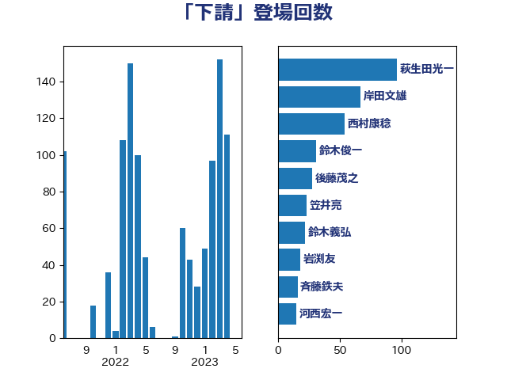

単語「下請」

| 萩生田光一 | 自由民主党 | 96 回 |
| 岸田文雄 | 自由民主党 | 67 回 |
| 西村康稔 | 自由民主党 | 54 回 |
| 鈴木俊一 | 自由民主党 | 31 回 |
| 後藤茂之 | 自由民主党 | 28 回 |
| 笠井亮 | 日本共産党 | 23 回 |
| 鈴木義弘 | 国民民主党 | 22 回 |
| 岩渕友 | 日本共産党 | 18 回 |
| 斉藤鉄夫 | 公明党 | 16 回 |
| 河西宏一 | 公明党 | 15 回 |
| 村田享子 | 立憲民主党 | 13 回 |
| 江島潔 | 自由民主党 | 11 回 |
| 林芳正 | 自由民主党 | 11 回 |
| 西田実仁 | 公明党 | 10 回 |
| 落合貴之 | 立憲民主党 | 10 回 |
| 福重隆浩 | 公明党 | 9 回 |
| 小野泰輔 | 日本維新の会 | 9 回 |
| 礒崎哲史 | 国民民主党 | 8 回 |
| 田村貴昭 | 日本共産党 | 8 回 |
| 大島敦 | 立憲民主党 | 8 回 |
| 里見隆治 | 公明党 | 7 回 |
| 森本真治 | 立憲民主党 | 7 回 |
| 太田房江 | 自由民主党 | 7 回 |
| 末松義規 | 立憲民主党 | 6 回 |
| 青柳仁士 | 日本維新の会 | 5 回 |
| 石川博崇 | 公明党 | 5 回 |
| 河野太郎 | 自由民主党 | 5 回 |
| 伊藤渉 | 公明党 | 5 回 |
| 中野洋昌 | 公明党 | 5 回 |
| 世耕弘成 | 自由民主党 | 5 回 |
| 青柳陽一郎 | 立憲民主党 | 4 回 |
| 近藤和也 | 立憲民主党 | 4 回 |
| 角田秀穂 | 公明党 | 4 回 |
| 稲津久 | 公明党 | 4 回 |
| 福島伸享 | 無所属 | 4 回 |
| 神津たけし | 立憲民主党 | 4 回 |
| 田村まみ | 国民民主党 | 4 回 |
| 片山さつき | 自由民主党 | 4 回 |
| 源馬謙太郎 | 立憲民主党 | 4 回 |
| 浅野哲 | 国民民主党 | 4 回 |
| 松山政司 | 自由民主党 | 4 回 |
| 杉尾秀哉 | 立憲民主党 | 4 回 |
| 山際大志郎 | 自由民主党 | 4 回 |
| 小沼巧 | 立憲民主党 | 4 回 |
| 小沢雅仁 | 立憲民主党 | 4 回 |
| 宮下一郎 | 自由民主党 | 4 回 |
| 塩川鉄也 | 日本共産党 | 4 回 |
| 高橋千鶴子 | 日本共産党 | 3 回 |
| 長峯誠 | 自由民主党 | 3 回 |
| 西銘恒三郎 | 自由民主党 | 3 回 |
| 若松謙維 | 公明党 | 3 回 |
| 窪田哲也 | 公明党 | 3 回 |
| 石井拓 | 自由民主党 | 3 回 |
| 本村伸子 | 日本共産党 | 3 回 |
| 平木大作 | 公明党 | 3 回 |
| 岡本三成 | 公明党 | 3 回 |
| 山口那津男 | 公明党 | 3 回 |
| 小林鷹之 | 自由民主党 | 3 回 |
| 室井邦彦 | 日本維新の会 | 3 回 |
| 城井崇 | 立憲民主党 | 3 回 |
| 仁比聡平 | 日本共産党 | 3 回 |
| 中川宏昌 | 公明党 | 3 回 |
| ながえ孝子 | 無所属 | 3 回 |
| たがや亮 | れいわ新選組 | 3 回 |
| 馬場伸幸 | 日本維新の会 | 2 回 |
| 音喜多駿 | 日本維新の会 | 2 回 |
| 青木愛 | 立憲民主党 | 2 回 |
| 野間健 | 立憲民主党 | 2 回 |
| 野上浩太郎 | 自由民主党 | 2 回 |
| 赤羽一嘉 | 公明党 | 2 回 |
| 赤澤亮正 | 自由民主党 | 2 回 |
| 藤田文武 | 日本維新の会 | 2 回 |
| 若宮健嗣 | 自由民主党 | 2 回 |
| 米山隆一 | 立憲民主党 | 2 回 |
| 篠原豪 | 立憲民主党 | 2 回 |
| 石井章 | 日本維新の会 | 2 回 |
| 深澤陽一 | 自由民主党 | 2 回 |
| 浜野喜史 | 国民民主党 | 2 回 |
| 浜口誠 | 国民民主党 | 2 回 |
| 柴田巧 | 日本維新の会 | 2 回 |
| 枝野幸男 | 立憲民主党 | 2 回 |
| 杉久武 | 公明党 | 2 回 |
| 庄子賢一 | 公明党 | 2 回 |
| 平山佐知子 | 無所属 | 2 回 |
| 川崎ひでと | 自由民主党 | 2 回 |
| 岡田直樹 | 自由民主党 | 2 回 |
| 岡本あき子 | 立憲民主党 | 2 回 |
| 山岸一生 | 立憲民主党 | 2 回 |
| 宮本徹 | 日本共産党 | 2 回 |
| 奥下剛光 | 日本維新の会 | 2 回 |
| 堀井巌 | 自由民主党 | 2 回 |
| 土田慎 | 自由民主党 | 2 回 |
| 吉川ゆうみ | 自由民主党 | 2 回 |
| 加藤勝信 | 自由民主党 | 2 回 |
| 伊藤孝江 | 公明党 | 2 回 |
| 井上哲士 | 日本共産党 | 2 回 |
| 三浦信祐 | 公明党 | 2 回 |
| 鰐淵洋子 | 公明党 | 1 回 |
| 高橋はるみ | 自由民主党 | 1 回 |
| 高木陽介 | 公明党 | 1 回 |
| 高木かおり | 日本維新の会 | 1 回 |
| 長友慎治 | 国民民主党 | 1 回 |
| 金子道仁 | 日本維新の会 | 1 回 |
| 足立康史 | 日本維新の会 | 1 回 |
| 赤嶺政賢 | 日本共産党 | 1 回 |
| 舟山康江 | 国民民主党 | 1 回 |
| 竹内譲 | 公明党 | 1 回 |
| 秋野公造 | 公明党 | 1 回 |
| 福島みずほ | 社会民主党 | 1 回 |
| 神田潤一 | 自由民主党 | 1 回 |
| 石井苗子 | 日本維新の会 | 1 回 |
| 石井正弘 | 自由民主党 | 1 回 |
| 矢倉克夫 | 公明党 | 1 回 |
| 田村憲久 | 自由民主党 | 1 回 |
| 玉木雄一郎 | 国民民主党 | 1 回 |
| 猪瀬直樹 | 日本維新の会 | 1 回 |
| 牧原秀樹 | 自由民主党 | 1 回 |
| 熊谷裕人 | 立憲民主党 | 1 回 |
| 浜地雅一 | 公明党 | 1 回 |
| 浅川義治 | 日本維新の会 | 1 回 |
| 泉健太 | 立憲民主党 | 1 回 |
| 沢田良 | 日本維新の会 | 1 回 |
| 水野素子 | 立憲民主党 | 1 回 |
| 松野博一 | 自由民主党 | 1 回 |
| 松本剛明 | 自由民主党 | 1 回 |
| 木原誠二 | 自由民主党 | 1 回 |
| 新妻秀規 | 公明党 | 1 回 |
| 島尻安伊子 | 自由民主党 | 1 回 |
| 山本太郎 | れいわ新選組 | 1 回 |
| 山下貴司 | 自由民主党 | 1 回 |
| 宮本岳志 | 日本共産党 | 1 回 |
| 大島九州男 | れいわ新選組 | 1 回 |
| 大家敏志 | 自由民主党 | 1 回 |
| 堂込麻紀子 | 無所属 | 1 回 |
| 坂本祐之輔 | 立憲民主党 | 1 回 |
| 吉川元 | 立憲民主党 | 1 回 |
| 勝部賢志 | 立憲民主党 | 1 回 |
| 佐々木紀 | 自由民主党 | 1 回 |
| 伊佐進一 | 公明党 | 1 回 |
| 今枝宗一郎 | 自由民主党 | 1 回 |
| 井上貴博 | 自由民主党 | 1 回 |
| 中田宏 | 自由民主党 | 1 回 |
| 中山展宏 | 自由民主党 | 1 回 |
| 上田清司 | 国民民主党 | 1 回 |
| 上田勇 | 公明党 | 1 回 |
| 上月良祐 | 自由民主党 | 1 回 |
| おおつき紅葉 | 立憲民主党 | 1 回 |